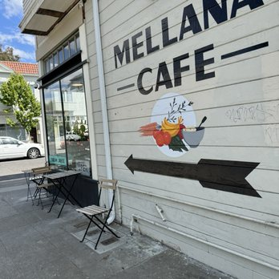
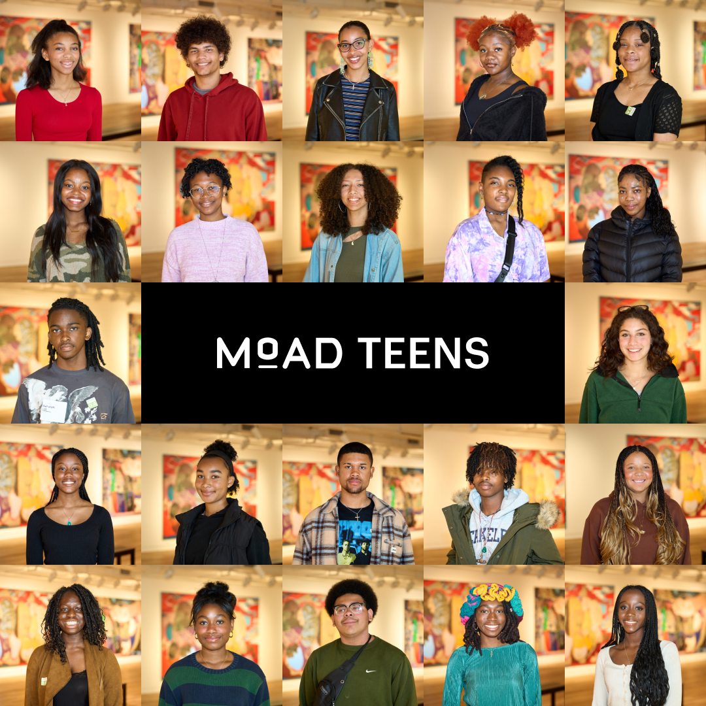
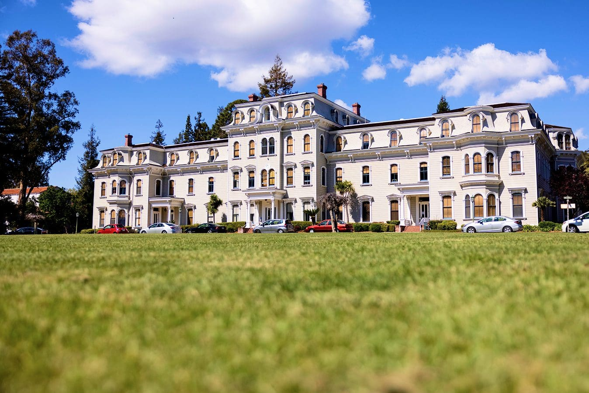

Nassor At-thinnin Gant
My name is Nassor Ngozi Umi At-Thinnin Gant, originally from Oakland, CA, and now residing in Riverside, CA. I am currently enrolled at the University of California, Riverside, where I am pursuing a degree in African American Studies. My passion lies in Africana Studies, cultural identity, creative writing, and the arts, and I use my work to uplift underrepresented voices through creativity and scholarship.
I am the published author of Sonar, a comic book that follows an African superhero on a mission to combat negativity, as well as my second publication, The Way We Choose to Walk. This body of work reflects my commitment to using storytelling as a tool for social change, weaving together narratives that explore identity, resilience, and community.
My journey as a leader and scholar has been shaped by programs such as the Ubuntu Leadership Academy, a two-year leadership program through the Brotherhood of Elders Network. Guided by the African philosophy of Ubuntu—“I am because we are, and we are because I am”—I gained essential skills in self-awareness, manhood development, and community service, completing over 50 service hours while working closely with mentors and elders.
Through The Hidden Genius Project, I completed a 15-month immersion program where I received intensive technical and entrepreneurial training. There, I developed websites, built software, and designed solutions for community challenges, further solidifying my belief that technology can be a powerful tool for addressing societal issues.
Beyond my academic and creative work, I have been fortunate to engage in philanthropic efforts, including helping to build computer labs in the Philippines. I have also received numerous leadership awards that reflect my dedication to service, cultural responsibility, and community uplift.
Every step I’ve taken—through literature, technology, leadership, and art—has been rooted in my desire to use creativity, scholarship, and community engagement to inspire change and reimagine the narratives of Black life.
Experience
Research Study Assistant
• Assisting with research projects and program tasks in the Mills Institute Hall
Barista
• Provided excellent customer service by engaging with patrons, taking orders, and crafting high-quality beverages.
• I managed daily café operations, including preparing drinks, handling transactions, maintaining cleanliness, and restocking supplies to ensure a welcoming and efficient environment.
• Additionally, I collaborated with team members to enhance the overall customer experience and uphold the café’s standards.
Summer Intern
• As a Youth Intern at the Museum of the African Diaspora, I participated in interactive workshops on African Diaspora history, led tours, engaged with visitors, and collaborated on a youth project showcasing the museum’s mission.
• Through assisting with events, developing public speaking skills, and learning from industry professionals, I gained experience in teamwork, cultural analysis, event planning, and museum career exploration.
Education
University of California Riverside
Portfolio






